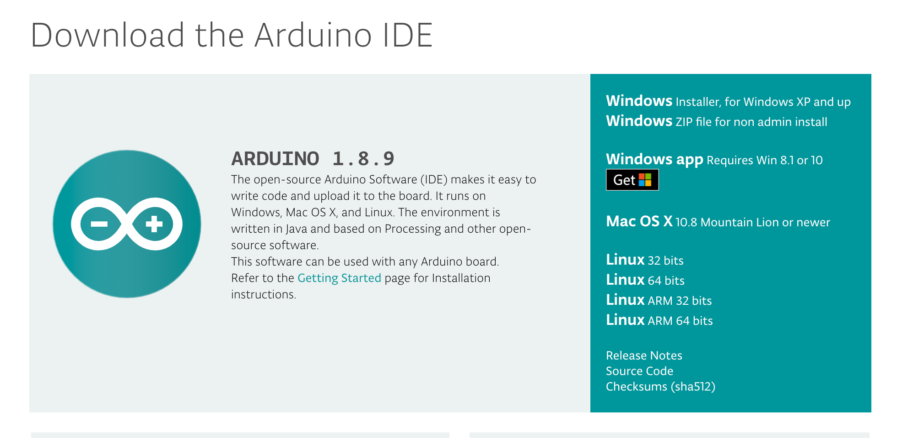
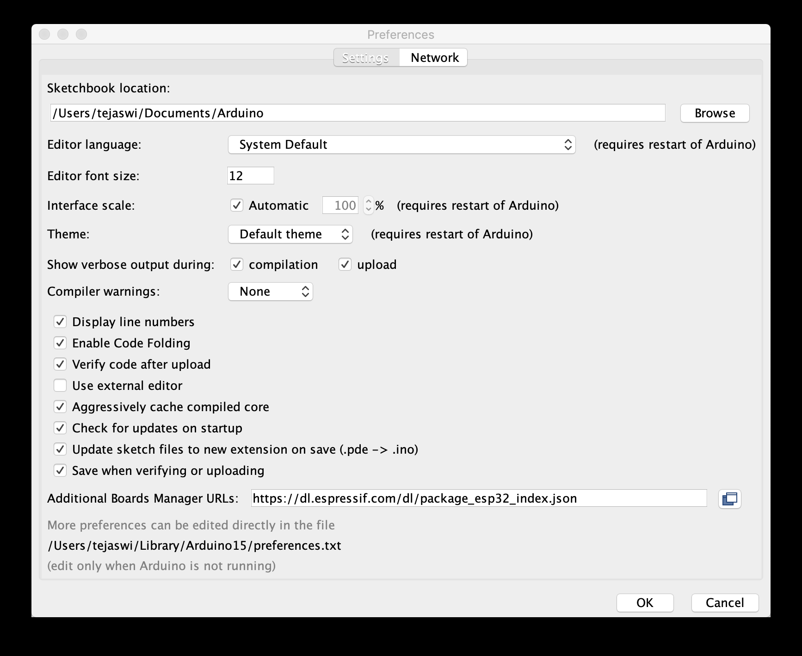
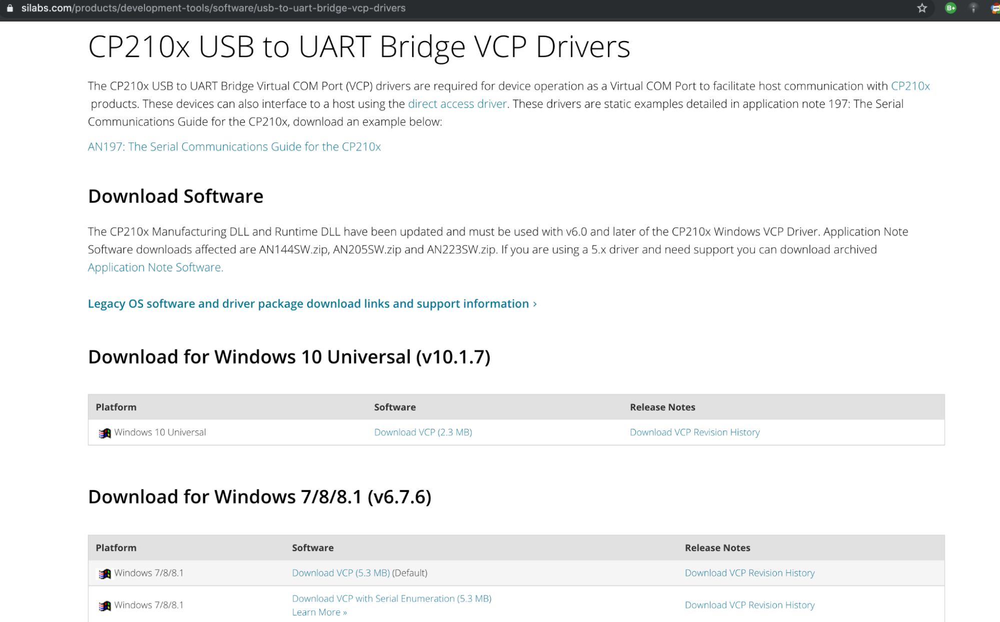
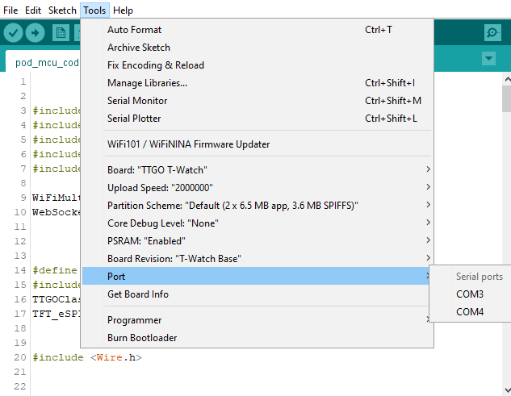

Quick Start Guide
Get Started
This is the Get Started guide for the Mesquite Motion Capture. This page assumes that you have all the necessary Hardware purchased. This page walks you through:
- The hardware soldering guide
- The software guide
- Installing Arduino and what boards to use
- The Raspberry Pi Code sample
- Mapping the devices to the model.
Hardware Soldering Guide
Below is a repeated overview of the hardware used. If you have already read this, feel free to skip and go straight to the soldering guide.
Hardware Specifications
To get started on this project, you need to have the following hardware.
LilyGo TTGO Watch 2019

You can purchase this watch from AliExpress or Amazon.
bno08x Chip
Soldered onto the watch hardware, you will need the bno08x chip added to the watch.

You can purchase this from Ali Express or Amazon.
Raspberry Pi zero
You will need a Raspberry Pi to aggregate the data and push it to the machine running the modeling script.
You can purchase this from the Raspberry Pi website. There are a few links to various purchasing options; you can pick the option that is right for you.
Router
You will need some basic router to allow the Seeds to push data to the Raspberri Pi for aggregation. Most will work.
Soldering Guide
Here is a short project that demonstrates the power of the bno08x in combination with the T-Watch. The code for this test project is here. Also, this project will show you how to solder the two components together. This project is mainly to test if the components work with no malfunctions. If you do not wish to do the test project. Here is a breakdown of soldering these components together. This guide assumes that you have access to a soldering iron. If you do not have experience with soldering, we reccommend that you DO NOT attempt this by yourself.
- You need a 4 wire ribbon cable: Strip each end of all wires and tin them.
- Solder the two boards together in the following order: VCC goes to VCC, SCL goes to 21, SDA goes to 22, GND goes to GND (you will need to reorder the wires to do this). Below is an example of the board inside the TTGO watch.

The end result should look like this:

- Put some electrical tape over the solder joints to prevent any sharp edges from puncturing components.
- Then squeeze the two boards back into the casing and screw it together. You should put them together something like this:

Arduino and Seed Guide
You will need Mesquite Mocap’s main repository of code. The Quick Start Guide outlines any other necessary software.
Getting Arduino to communicate with the T-Watch
Individual seeds are configured using Arduino. Download and install Arduino
Necessary Externals/Libraries
Once Arduino is installed, open it and go to the preferences. In the ‘Additional Boards Manager URLs, add this URL: https://dl.espressif.com/dl/package_esp32_dev_index.json
Next, you will need to install a USB to UART Driver. Our computers use the USB protocol to communicate to other devices, whereas the Pod uses the UART protocol. This driver allows our computers to translate between these two protocols and upload data to the Pods.
Now, you need to install the T-Watch library from the official github. These should be all the external dependencies needed.
Connecting to the T-Watch
Connect a Pod via USB cable and choose your port in the Arduino IDE. On MacOS it should be obvious which port you need to choose and on Windows you need to guess and check until you find the correct port.
Open the pod-mcu-code. You will need to change lines 26-28. Add your router’s SSID, password, and serverIP address as the variables for line 26, 27, and 28 respectively.
Compile and run the edited pod-mcu-code on your T-Watch by clicking on the check mark and arrow buttons in the top left corner of the IDE. Open up the serial monitor to make sure the watch streams data. Also, you will want to write down the mac address for each watch as you go since we will use the mac address to map each joint later on. Repeat this process for each TTGO T-Watch in the pod.
Code block to look for
// ID wifi to connect to
const char* ssid = "YOUR WIFI";
const char* password = "YOUR PASSWORD";
String serverIP = "YOUR IP";
int sensor_clock = 21; // updated clock - double check your soldering
int sensor_data = 22; // this is from the soldering. double check what you have soldered your data to
Raspberry Pi Code Sample
This section describes what you need to do for the aggregation piece within the Raspberry Pi.
Installing NodeJS and Necessary Software
First, you need to copy this code into your terminal to install node.js and other dependencies for the system to work properly.
sudo apt update
sudo apt install nodejs npm git
sudo npm install -g forever http-server
Finishing Pi setup
To finish the Raspberry Pi Zero setup, we will put the pi-ws-server-to-serial onto the pi. This takes the streamed data from the Seeds and converts it to serial data. This makes it much easier to aggregate the data onto any computer plugged into the pi. Go to the terminal on your Raspberry Pi and clone the pi-ws-server-to-serial repo.
In your terminal
:
cd [REPO PATH]
npm install
forever start server.js // to start the server and keep it running
//To start the server on boot you will need to add ‘forever start server.js’ to your ~/.bash_profile.
Mapping and Model
Clone the web-client-serial repo on to your computer. Navigate to the mappings.js file in the docs folder of the web-client-serial directory. Change the mac addresses from "00:00:00:00:00:XX" to the specific mac addresses of each of your T-Watches. This is why we wrote down the addresses for each watch earlier. The code shows which joint each Pod should be. If you do not already have them, you can find the mac addresses (along with the output data) of your T-Watch in the serial monitor in the Arduino IDE while it is plugged in and running the code.
In your terminal on MacOS or terminal emulation on Windows GitBash is a good one), ‘cd’ to the web-client-serial folder, then enter in ‘node server.js’.
After this, you can go to the local host: (http://localhost:1234). When you hit the Connect button at the top, a drop down menu will show you the available serial ports. Click on the serial port that your Raspberry pi is sending data to. The 3D model on the screen should now move according to the Pod. Each T-Watch controls a different joint of the model based on your custom mapping.
Congratulations! You have a working motion capture suit!